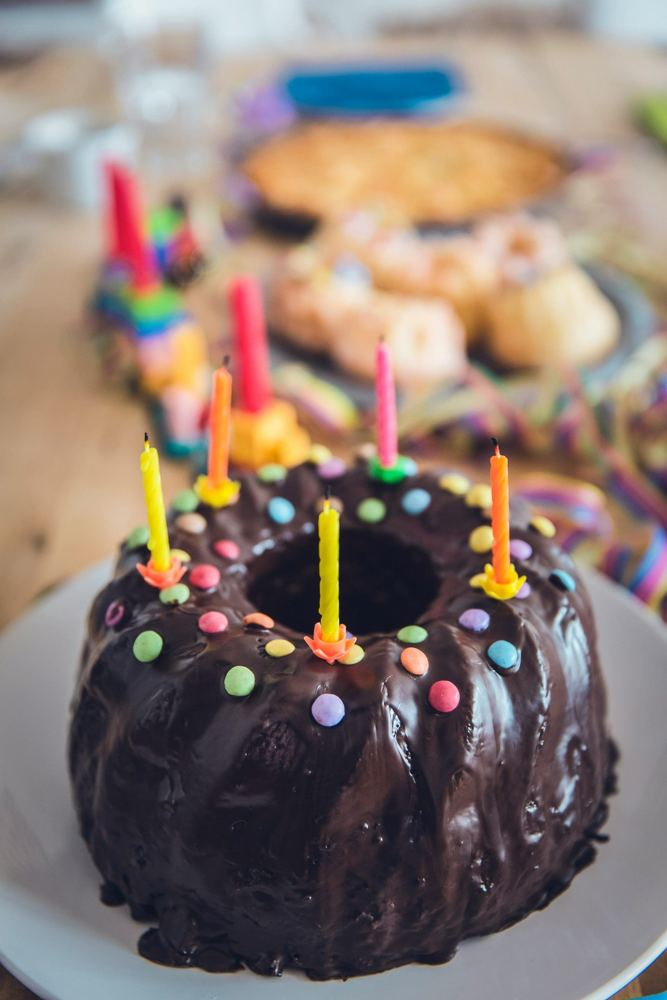

Birthday Prayer Tradition
[PLACEHOLDER IMAGE, NOT HOLY FAMILY]
It’s My Birthday
Today my heart is filled with joy,
as I celebrate my birthday.
Thank you, Lord, for all the blessings
I’ve received along my way.
Your grace has guided my path
and helped me grow.
Your love has helped me to learn
all that I know.
Thank you for all the gifts
I’ve received throughout the year,
but most of all, the love of Jesus,
may I always hold most dear.
I celebrate my birthday
with Jesus by my side.
No greater gift have I received
than the love that you provide.

[THIS PAGE WAS NOT IN THE BRIEF. IT IS KEPT AT ITS CURRENT ADDRESS — PLACEMENT TO CONFIRM]